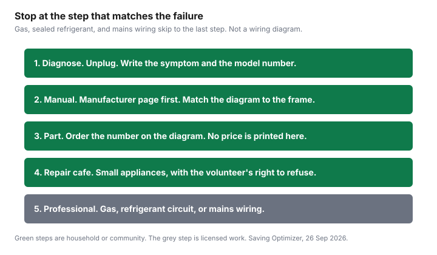

Household Items and Supplies · Canada
Repair Cafés and DIY Appliance Repair in Canada: Parts, Manuals, and Right-to-Repair Status
A dead kettle is not automatically a new kettle. In a lot of Canadian cities a repair café will sit with you, for free, and try to fix a small appliance, a lamp, or a zipper. The limit is safety and parts, not enthusiasm. Gas, a sealed refrigerant circuit, and mains wiring stay with a licensed person. This page is education. It is not a repair instruction for a live circuit, and it is not legal advice about a bill that has not passed.
The decision that comes after a failed repair, or before you start one, is the repair-or-replace worksheet. A store plan you already paid for is the warranty guide. A café does not replace either one.
Key takeaways
- Repair Café Toronto, opened 26 Sep 2026, runs free community repair of small appliances and other household items. Its calendar that day listed Scarborough and Front Street events.
- Repair Café Montréal’s English page says workshops are free, the movement reached Montréal in 2016, and monthly events are at Espace des possibles in Petite-Patrie.
- No Canadian parts price was on a listing opened for this draft. The table keeps the skill and the “call a pro” line, and leaves cost blank.
- Bill C-244 received royal assent on 7 Nov 2024. It is a Copyright Act exception for diagnosis, maintenance, and repair. It does not require a manufacturer to sell parts.
- Bill C-267 was at committee in the House of Commons after second reading on 17 Jun 2026. Ontario Bill 187 was at first reading, ordered for second reading, on the assembly page opened 26 Sep 2026. Neither is treated here as law in force.
What a repair café is and what they can fix
A repair café is a scheduled community event, not a shop with a service counter all week. Repair Café Toronto’s site says it organizes events where neighbours help neighbours learn how to repair household items, and the visit page tells you to bring small appliances, computers, electronics, clothes, jewellery, books, and more, and that they will show you how to fix it for free. The same site keeps house rules, safety procedures, a code of conduct, and a right to reject. Read those before you carry in an object. A volunteer can refuse a job. That refusal is part of the model, not a rude exception.
Repair Café Montréal’s English page, opened the same day, says volunteers organize free repair workshops to give objects a second life, and that the workshops try to involve you so you learn the repair. It dates the international movement to 2009 in the Netherlands and its arrival in Montréal to 2016. It names electrical, sewing, mechanical, and computer skills among the help it wants. It does not promise a gas range, a sealed fridge system, or a same-day parts counter. Show up with the object, the symptom, and the patience to be told it cannot be finished that afternoon.
What they can fix depends on who volunteered that day and on whether the failure is visible. A loose cord grip, a torn seam, a sticky switch, and a kettle that needs descaling are the kind of jobs these pages describe. A compressor that has lost its charge is not. If the object is under a manufacturer warranty or a store plan, a café session can void a seal or a term you have not read. Check that paper first. The warranty guide is the order of operations: manufacturer, card certificate, provincial law, then a paid plan.
Finding one in your Canadian city
Name only a café whose page you have opened. This draft opened two. Repair Café Toronto’s calendar, read 26 September 2026, listed a Port Union Repair Café that day, 10 a.m. to 3 p.m. at the Port Union Community Recreation Centre, 5450 Lawrence Avenue East, Scarborough, and a Repair Café at the Canary District yard sale, 11 a.m. to 3 p.m. on the Front Street Promenade. It also listed a Creative Reuse Toronto drop-in the next day at 68 Abell Street. Those are dates on a calendar, not a promise the same rooms repeat every month. Open the calendar again before you travel. The site says the group marked 12 years in 2025, with a first café on 25 May 2013, and that it expanded to 14 new locations in 2025 alongside its regular ones. A location list from last year is not this Saturday.
Repair Café Montréal says it currently organizes monthly events at Espace des possibles in Petite-Patrie, and that other workshops happen in Montréal and elsewhere in Québec. The French information page places most of those workshops at 6450 Avenue Christophe-Colomb, at Beaubien, and it says the group is not there every day. Do not leave an object at the door. This draft did not open an organiser page for Vancouver, Calgary, Halifax, or Winnipeg, so it does not name a café there. Search the city’s own name plus “repair café” and open the page that a local volunteer actually maintains. An international map that this draft did not open is not a citation.
DIY-friendly repairs: fuses, belts, filters, cords
Unplug first. If you cannot see how the part comes out without cutting a wire, it is not the beginner row. Filters and a clip-in gasket are the jobs a careful household does with the manual on the counter. A user-accessible fuse, the kind a manual tells you to change without opening a live chassis, is the same family. A belt is next, and only when the model number from the frame matches a diagram that shows the belt path. A cord is the line. Replacing a detachable cord that unplugs from the appliance can be a parts swap. Splicing, shortening, or “fixing” a mains cord with tape is not a DIY step this guide will describe, because it is how fires start. Gas valves, burner assemblies, and any fridge or air conditioner repair that opens the refrigerant circuit are professional work even if a video makes them look short.
A repair café is a good place to learn the filter, the gasket, and the “is this even worth opening” question, with someone watching. It is a bad place to insist on a gas job the volunteer has already refused. Bring the model sticker in a photo if the machine cannot travel. Small appliances travel. A fridge usually does not, and a fridge with a failed sealed system is the replace-or-repair decision, not a Saturday table.
Parts and manual sourcing in Canada
The model number is on the frame, not in your memory of the receipt. The manufacturer’s support page is the first manual. If that page offers a parts diagram, use the diagram’s part number rather than a photo that “looks like” the belt. Independent parts sellers exist in Canada. This draft did not open one of their listings with a price and a part number that matched a named model, so no dollar figure is in the table. A price you remember from a forum is not a quote. When you do open a listing, record the seller, the part number, the dollar, and the date, and add shipping. A $12 belt that becomes $40 with freight is a different decision.
Bill C-244, below, can matter when a manual or a diagnostic is behind a digital lock. It does not stock the belt. A local shop that will say, in writing, whether the part is available before you authorize a diagnostic is the adult version of a parts search. If the part is discontinued, the café can still help you decide to stop. Stopping is a result.
Right-to-repair: Bill C-244 (law), Bill C-267 and Ontario Bill 187 (pending)
Three documents get flattened into “Canada passed right to repair.” Only one of them is law, and it is narrower than the slogan. LEGISinfo for Bill C-244, 44th Parliament, 1st session, says the bill received royal assent on 7 November 2024 and is Statutes of Canada 2024, chapter 26, an Act to amend the Copyright Act (diagnosis, maintenance and repair). The title is the scope. It is a copyright exception. The repair-or-replace guide, from the Parliament text opened for that page, describes the exception as covering circumvention of a technological protection measure solely to maintain or repair a product, including diagnosing, including when someone does that for you, and not applying if the person infringes copyright. Nothing in the status page opened here orders a manufacturer to sell a board or publish a schematic. Do not tell a café that C-244 means the part must be in stock.
Bill C-267, the National Framework on the Durability of Electronic Products and Essential Home Appliances Act, is a private member’s bill in the 45th Parliament. LEGISinfo, retrieved 26 September 2026, lists its status as consideration in committee in the House of Commons. First reading was 11 March 2026. Second reading and referral to the Standing Committee on Industry and Technology was 17 June 2026. The House of Commons vote that day, vote 170, was agreed to: 192 yeas, 131 nays, 14 paired. Report stage and third reading had not been reached on that LEGISinfo page. A framework the minister has not been required to write yet is not a part number. Do not cite C-267 as a duty a shop already has.
Ontario Bill 187, the Right to Repair Act covering consumer electronics, household appliances, wheelchairs, motor vehicles, and farming equipment, is a 2024 private member’s bill. The Legislative Assembly of Ontario page opened 26 September 2026 shows first reading carried on 16 April 2024 and the bill ordered for second reading. Commencement is on a day named by proclamation. The status table does not show royal assent. The text, if it were law, would require manufacturers to make repair manuals, parts, software, and tools available, with the manual at no charge unless a paper copy is requested at a reasonable cost, and parts at a fair cost. Until proclamation, that Part of the Consumer Protection Act, 2023 is not this bill. Watch the assembly page rather than a summary that says Ontario has a right-to-repair statute in force.
| Job or instrument | Skill, if you proceed | Part cost | Call a pro, or the legal status |
|---|---|---|---|
| Filter | Beginner, unplugged, if the manual shows a user filter. | Not on a listing opened 26 Sep 2026. | Stop if the filter is inside a housing you must force, or if the appliance is gas. |
| Door seal or gasket | Beginner to intermediate when the gasket clips or screws on and the manual shows it. | Not on a listing opened 26 Sep 2026. | Stop if the job means opening a sealed refrigerant system or removing a door you cannot realign. |
| User-replaceable fuse | Beginner only when the manual tells you to change it without opening a live chassis. | Not on a listing opened 26 Sep 2026. | Any fuse behind a panel on mains wiring is a pro job. Do not substitute a higher rating. |
| Belt | Intermediate, model number in hand, diagram matches. | Not on a listing opened 26 Sep 2026. | Stop if the machine is gas, or if reassembly blocks a safety switch you do not understand. |
| Cord | Only a detachable cord the appliance is designed to unplug. | Not on a listing opened 26 Sep 2026. | Mains splicing, tape, or a shortened cord is not DIY. That is an electrician or a replacement appliance. |
| Bill C-244 | Not a repair skill. A Copyright Act exception. | Does not set a parts price. | Royal assent 7 Nov 2024. Law. Not a duty to sell parts. |
| Bill C-267 | Proposed federal durability framework. | Not in force. | In committee in the Commons. Second reading 17 Jun 2026. Vote 192 to 131, 14 paired. Not law. |
| Ontario Bill 187 | Proposed provincial parts-and-manual duty. | Not in force. | First reading 16 Apr 2024, ordered for second reading. Starts on proclamation. Not assented on the page opened. |
Safety limits: when to call a pro
Call a licensed technician for gas, for any repair that opens a refrigerant circuit, and for mains wiring that is not a detachable cord. Call before you keep using a machine that smells of burning, trips a breaker, or has a scorched plug. A café volunteer who says “not this one” is giving you the safety limit. Thank them and stop. Water on the floor under a dishwasher can be a simple hose or a failed pump. If you are not sure which, it is a pro visit, because a wrong guess floods a cabinet. The used-goods guide is the other stop line: do not repair a crib, a car seat, or a recalled product back into use. Search the brand and model on recalls-rappels.canada.ca before you invest an afternoon.
Cleaning supplies you replace on a schedule, including filters you buy new rather than “fix,” are the closet guide. A repair café will not restock your vacuum filters. It might show you which one the model takes, which is the useful half of the trip.

Sources & date stamps
- Repair Café Toronto, repaircafetoronto.ca, opened 26 Sep 2026. Free community repair, the item list, house rules and a right to reject, and the 26 Sep 2026 calendar entries named above. First café dated on the site as 25 May 2013.
- Repair Café Montréal, repaircafemtl.com/en, opened 26 Sep 2026. Free workshops, movement in Montréal since 2016, monthly events at Espace des possibles in Petite-Patrie. The French information page places workshops at 6450 Avenue Christophe-Colomb.
- Parliament of Canada, LEGISinfo, Bill C-244, 44th Parliament, 1st session, opened 26 Sep 2026. Royal assent 7 Nov 2024. Statutes of Canada 2024, chapter 26. Copyright Act, diagnosis, maintenance, and repair.
- LEGISinfo, Bill C-267, 45th Parliament, 1st session, retrieved 26 Sep 2026. At consideration in committee. First reading 11 Mar 2026. Second reading and referral to INDU 17 Jun 2026. House vote 170: 192 yeas, 131 nays, 14 paired. Report stage not reached.
- Legislative Assembly of Ontario, Bill 187, page opened 26 Sep 2026. First reading carried 16 Apr 2024, ordered for second reading. Commencement on proclamation. Not shown as assented.
Frequently asked questions
What is a repair café?
It is a community event where volunteers help you repair household items, usually at no charge for the labour. Repair Café Toronto’s site says neighbours learn to repair together, and it names small appliances, computers, electronics, clothes, jewellery, and books. Repair Café Montréal’s site says the workshops are free and that the goal is to involve you in the repair, not only to hand the object back fixed.
How do I find a repair café near me?
Use the organiser’s own page, not a directory you have not opened. Repair Café Toronto’s calendar on 26 September 2026 included events that day in Scarborough and on Front Street, and Repair Café Montréal says it organizes monthly events at Espace des possibles in Petite-Patrie. This draft did not open a Calgary or Vancouver organiser page, so it does not name one.
Which appliance repairs are safe to DIY?
User-replaceable filters, a clip-in door gasket, and a fuse you can change without opening a live chassis are the usual starting set, with the machine unplugged. A belt can be a parts job once you have the model number and a manual that shows the path. Gas, sealed refrigerant, and mains wiring are professional work. A repair café is not a licence to open a gas range.
Where can I buy appliance parts in Canada?
Start with the manufacturer’s support page for the manual and the parts diagram, using the model number on the frame. This draft did not open a Canadian parts listing with a price, so the table does not print a part cost. A shop that will confirm the part is available before you pay a diagnostic is the practical next step. Bill C-244 does not order a company to sell you the part.
What does right to repair mean in Canada right now?
The law in force, on the LEGISinfo page for Bill C-244, is a Copyright Act change that received royal assent on 7 November 2024 and covers circumventing a technological protection measure to diagnose, maintain, or repair. It is not a parts mandate. Bill C-267 was in committee in the House of Commons on the LEGISinfo page checked 26 September 2026, and Ontario Bill 187’s assembly page showed first reading on 16 April 2024 and an order for second reading, not royal assent.